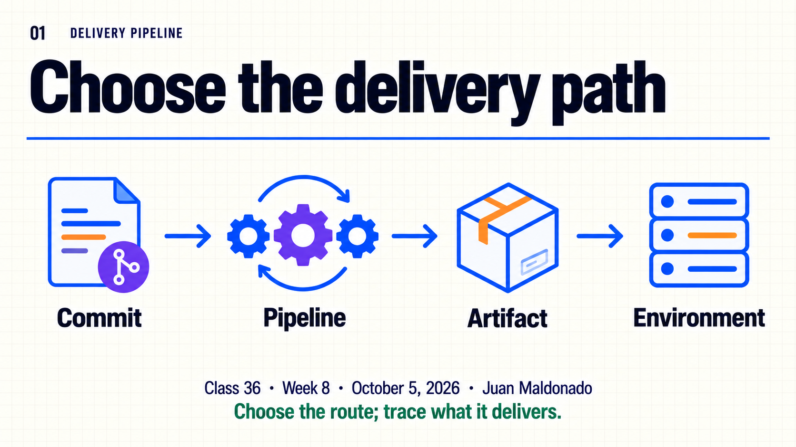
30-minute agenda
| Time | Slides | Focus |
|---|---|---|
| 0–5 | 1–3 | Program, environment, repository and pipeline purpose. |
| 5–14 | 4–7 | Choose the pipeline type from the changed asset. |
| 14–22 | 8–9 | Trace the commit and diagnose the wrong branch. |
| 22–28 | 10–11 | Classify four changes and defend the route. |
| 28–30 | 12 | Questions. |
The Spanish study guide provides guided analysis of a simulated pipeline run, four conceptual change cards and answers. A green code-quality run does not prove deployment.
Complete slide deck
Copy each numbered PNG to PowerPoint or download it below.

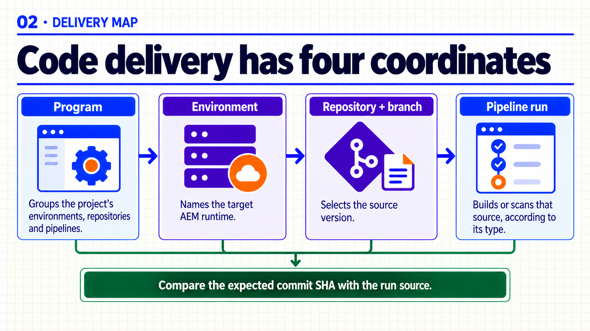

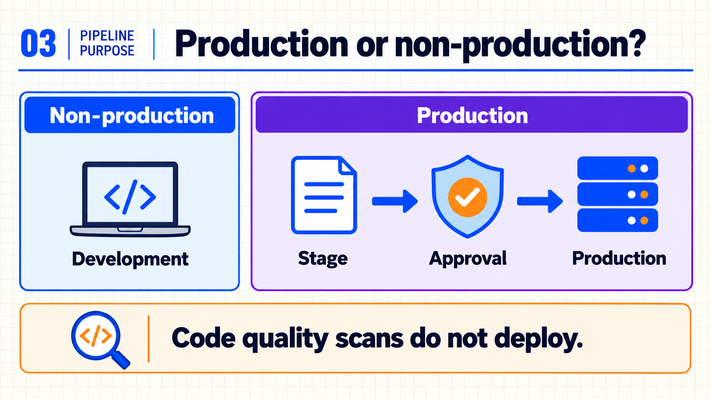

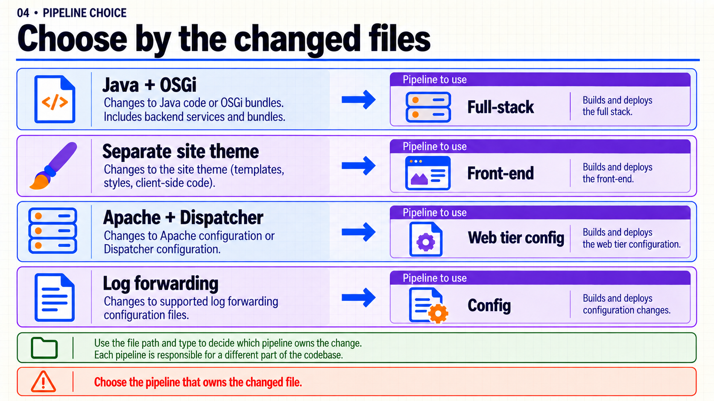

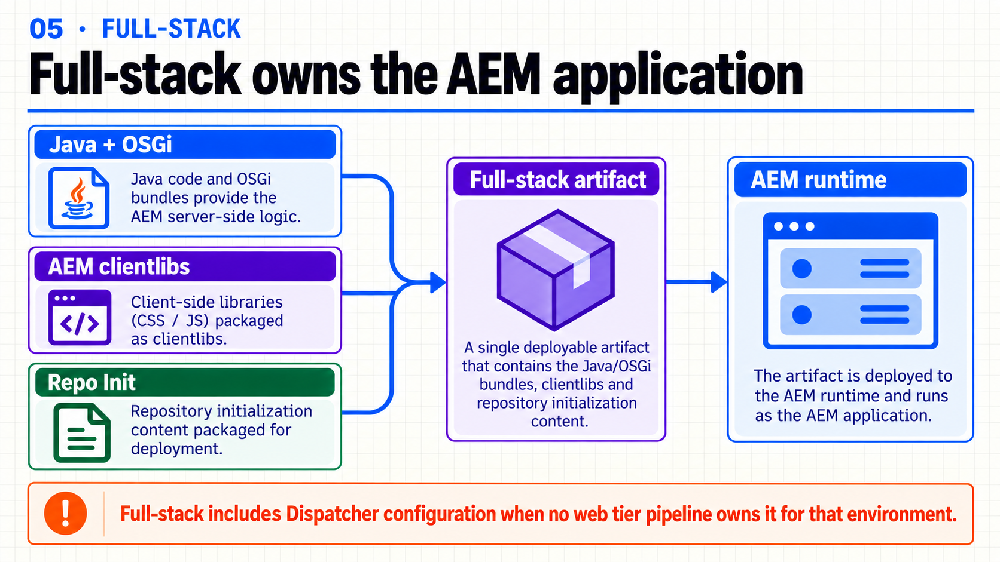

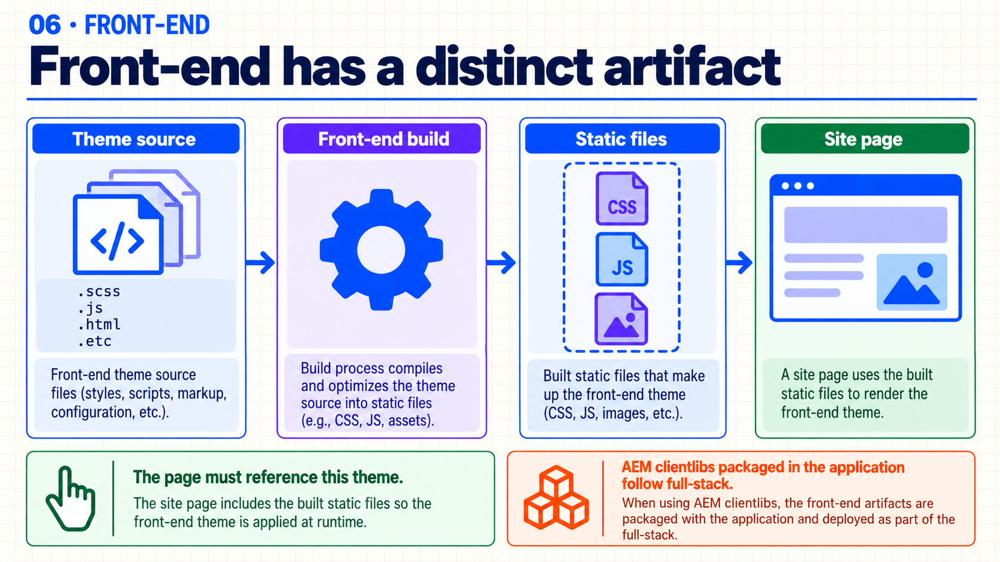

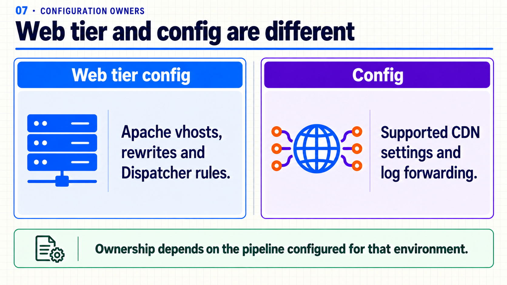

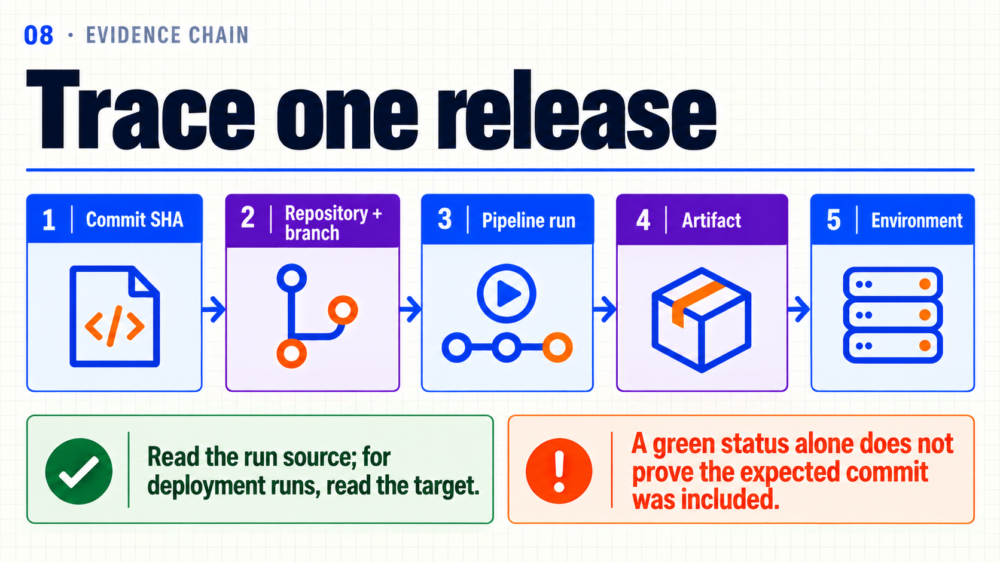

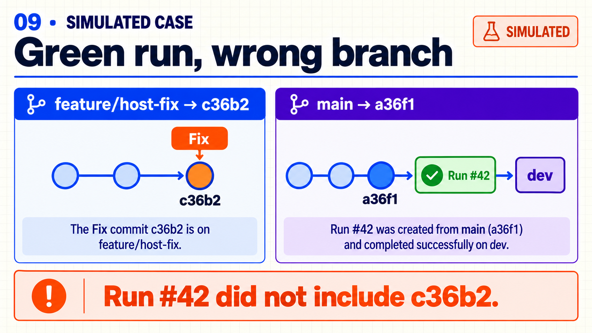

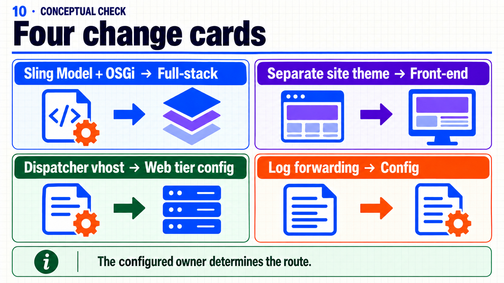

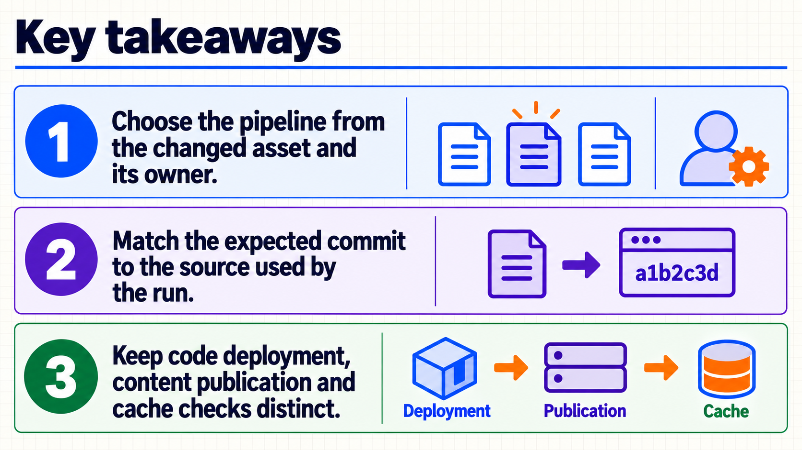

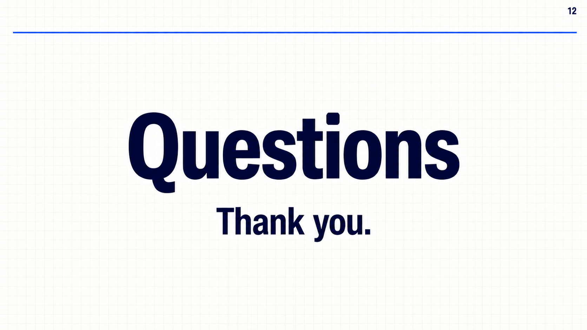